La exposición sigue el orden en que se entiende el problema: primero el instrumento
—qué es un satélite meteorológico y qué nos deja ver—, después la atmósfera —qué
canal revela qué nube y qué fenómeno— y por último la operación —qué significa todo
eso para este vuelo y qué se decide—. Un bloque por persona, en ese orden.
Cristian Arcila A · el satélite
Ángela Torres B · canales y fenómenos
Leonardo Rodríguez C · ruta y decisión
IPreparación — común · §1 tesis · §2 reparto · §3 guion con clics
IIBloque A · Cristian — §4 guion · §5–8 el satélite y sus límites
IIIBloque B · Ángela — §9 guion · §10–13 los canales · §14–19 nubes y fenómenos
IVBloque C · Leonardo — §20 guion · §21–25 análisis y decisión
VEl triple contraste — común · §26–30
VILa defensa — §31–33 preguntas por bloque · §34–36 límites, números, plan B
Cómo usar esta guía. Cada uno lee su parte entera y se aprende su guion. Las secciones
de respaldo de cada bloque no se exponen: son de donde salen las respuestas. Las partes
V y VI las leen los tres.
1La tesis y las tres frases que la sostienen
Si la sala se queda con tres frases, que sean estas.
Tesis: entre SKVV y SKLT hay 553 NM de Amazonía donde la observación de superficie
no llega. La teledetección satelital no confirma lo que ya dice el METAR: cubre el hueco
que el METAR no puede cubrir, y ese hueco es exactamente donde estaba el problema.
Frase 1 — el hueco es real y se mide. «Ninguna de las catorce células que seguimos
estaba sobre una estación. Entre SKVV y SKLT el METAR más próximo a la ruta llega a quedar
a más de 100 NM. Sin satélite, ese corredor es un vacío de observación.»
Frase 2 — una sola imagen da la respuesta contraria. «A la hora de salida, el 2 % de
la ruta tenía topes por encima de nuestro nivel. Dos horas después, el 14 %, y el tope
máximo pasó de FL236 a FL478. El caso no se decide con la foto de la planificación: se
decide con la evolución.»
Frase 3 — el método vale más que el número. «Cada cifra lleva escrito de dónde sale,
y donde no hay lectura concluyente el visor lo rotula en vez de rellenarlo. Un panel que
dice "18 puntos ambiguos" es más defendible que una curva continua y bonita sin origen.»
El cierre, en una línea: la decisión no fue «no volar», fue GO con desvío
planificado — 9 NM de quiebro que cuestan 1,1 NM de recorrido, decididos quince
minutos antes y no encima del obstáculo.
2Reparto y minutado
20 minutos de exposición, 10 de preguntas. El orden es instrumento → atmósfera → operación.
Min
Quién
Bloque
En pantalla
0–1
Cristian
Portada y pregunta del trabajo
Portada del visor, a pantalla completa
1–6
Cristian
A · El satélite y lo que nos deja ver qué es GOES-19, la ventana, el zoom extendido, el patrón del día, cómo se mide y qué no se ve
Vista general a 1730Z · pestaña Bandas · Comparar bandas
6–13
Ángela
B · Los canales, las nubes y los fenómenos qué revela cada canal, qué nubes había y qué fenómenos se derivan
Banda 13 · 9 · 10 · 2 · 4 · 5 en secuencia, todas a 2030Z
13–19
Leonardo
C · La ruta, el análisis y la decisión el día contra el reloj del vuelo, perfil, tramos, EFB, alternos
Dos reglas de reparto. La primera: el que no habla maneja el visor; quien
expone no toca el ratón. La segunda: cada pregunta la contesta el dueño del bloque,
aunque sepan los tres la respuesta. Un equipo que se pisa parece un equipo que no se
repartió el trabajo.
Si el tiempo aprieta, el que se recorta es el bloque A, no el B ni el C: el hallazgo
se entiende sin el instrumento, pero el instrumento sin el hallazgo no lleva a ninguna parte.
Cristian pasa entonces de cinco minutos a dos, con los puntos 1, 2 y 5 de su guion.
3El guion con los clics, minuto a minuto
Para quien conduce el visor. Se ensaya una vez entero, cronómetro en mano.
Min
Bloque
Clic exacto
Qué debe verse antes de que siga hablando
0
A
Abrir index.html · portada a pantalla completa
Portada con la ruta y el reloj. No entres todavía.
1
A
Botón Entrar al visor, barra en 1730Z
Mapa de Colombia entero con la caja de cobertura: el «zoom extendido».
2
A
Acercar a la ruta · Capas → encender Zonas P/R/D
La etiqueta «1 sobre la ruta»: es SKR7, el argumento de FL190.
4
A
Pestaña Bandas · después botón Comparar bandas
Los ocho canales listados; luego la cortina. Diez segundos, no más.
6
B
Banda 13, arrastrar la barra de 1730Z a 2030Z
Un núcleo al principio, campo lleno al final. Silencio mientras se mueve.
8
B
Banda 9 → banda 10 (barra en 2030Z)
El corredor rojo = seco, con los núcleos húmedos encima.
10
B
Banda 2 → banda 4
Torres granuladas; y el hielo alto solo en el último tercio.
12
B
Banda 5
El canal de la fase, para hablar de engelamiento.
13
C
Botón Perfil, barra en 1830Z y luego a 2030Z
Las columnas subiendo por encima de la línea azul de FL210.
15
C
Pestaña Tramos → desplegar ASKAT → DADIL
20 %, FL431, −55,2 °C, y el veredicto EVITAR de la ruta arriba.
16
C
Botón EFB (barra sigue en 2030Z)
Las alertas rojas y el punto de decisión abierto.
18
C
Pestaña METAR/TAF → SKLT · pestaña Alterno
La secuencia 1900Z RA → 2100Z VCSH 8000; y la matriz de alternos.
19
A
Pestaña Fenómenos → ficha de cb-02 abierta
Pantalla quieta para el cierre y las preguntas.
Dos errores que se cometen siempre: mover la barra mientras se habla —nadie escucha
y nadie mira— y darle a ▶ para reproducir la animación. Úsala solo si sobra tiempo,
al final.
4Bloque A · Guion de Cristian — 5 min
Objetivo: que la sala entienda qué es esto que están viendo antes de que nadie les enseñe una tormenta.
Sitúa el caso en una frase. «ATR 72-600, Villavicencio a Leticia, 553 NM, FL210,
salida 1830Z, llegada prevista 2055Z. La pregunta del trabajo es simple: ¿se puede volar
esta ruta a este nivel?»
Di qué estamos mirando. «Todo lo que verán sale de GOES-19, un satélite
geoestacionario que barre el disco completo cada diez minutos. Hemos congelado su ventana
entre las 1730Z y las 2200Z: 28 cuadros por canal, ocho canales, 223 imágenes. Nada
se consulta en vivo.» (§5)
Abre como se abre un briefing de verdad. «Se empieza con un zoom extendido,
mirando de lejos para ver el patrón general.» Enséñalo: la ZCIT al norte del
territorio, y ningún otro patrón sinóptico ese día. Luego baja al corredor.
(§6)
El nivel no se eligió a gusto. «La derrota va entre 123° y 171° magnéticos:
semicírculo 000–179, nivel impar obligado. FL200 no es asignable en este sentido, y FL190
coincide con el techo de la zona restringida SKR7 sobre el propio aeródromo de salida.
Queda FL210.» Enciende Zonas P/R/D: «1 sobre la ruta».
El paso que sostiene todo lo demás. «El satélite publica imágenes en color, no
números. Nosotros invertimos la tabla de color que publica SLIDER para volver de
color de píxel a temperatura de brillo, y de ahí a altura de tope. Donde el color es
ambiguo, el visor lo rotula en vez de adivinar.» (§7)
Y cierra diciendo lo que el satélite NO ve, antes de pasar el turno. «Ve el tope de
la nube, no la nube. No ve la base, ni el granizo en superficie, ni un estrato bajo a
400 ft. Eso lo veremos en el METAR.» (§8)
Cómo pasas el turno a Ángela: «Eso es lo que el instrumento puede ver. Ahora, canal
por canal, qué nos dice cada uno del día que nos interesa.»
5Qué estamos mirando: GOES-19, la ventana y el recorte
Respaldo del bloque A. Lo básico que hay que poder decir sin dudar.
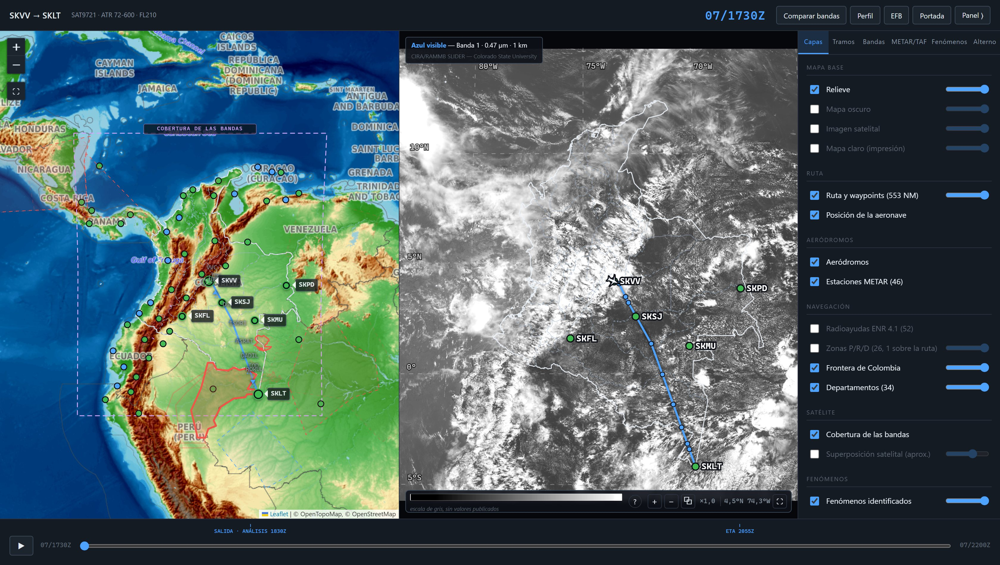
El visor abre así, a 1730Z: encuadrado en la caja de cobertura de las bandas y no en la ruta. Es deliberado — abrir en zoom sobre el corredor escondería que el trabajo cubre el país entero.
Plataforma
GOES-19, geoestacionario. Barre el disco completo cada 10 min, en punto
Instrumento
ABI — Advanced Baseline Imager, 16 canales. Usamos 8
Fuente
CIRA/RAMMB SLIDER, Colorado State University. Producto renderizado, no radiancias crudas
Ventana
1730Z–2200Z: una hora antes de la salida y una después de la ETA
Cadencia
10 min · 28 cuadros por canal, sin huecos
Volumen
223 imágenes congeladas en disco · 470 observaciones METAR · 225 SIGMET
Recorte
Colombia continental e insular más 1,5° de margen
Por qué la ventana se cierra en 2200Z y no en 2155Z: porque el satélite barre en
punto cada diez minutos, y 2200Z es el primer cuadro posterior a ETA+1 h. Es el tipo de
detalle que conviene tener a mano: demuestra que la ventana se eligió, no se heredó.
Y una advertencia honesta que va en este bloque: lo que descargamos de SLIDER es la
imagen ya coloreada, con 192 escalones de tabla y compresión JPEG por medio. No son
las radiancias calibradas del instrumento. Todo lo que medimos arrastra ese error, y lo
decimos antes de que lo pregunten.
6Cómo se abre un briefing: del zoom extendido al corredor
Respaldo del bloque A. El método es del meteorólogo de la oficina, grabado en la asesoría.
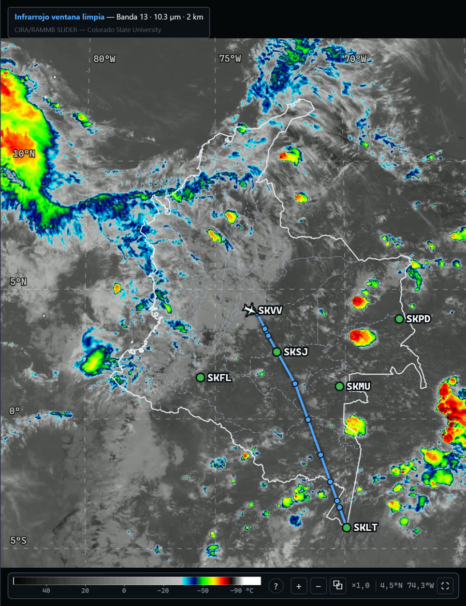
Banda 13 a 1830Z, hora de salida. La ZCIT es la franja nubosa del norte; la Orinoquía y la Amazonía están mayormente despejadas, con núcleos sueltos al oriente.
Primero de lejos. «Normalmente empezamos con un zoom extendido, vemos la imagen
más desde lejos para ver en general qué está pasando.» Aplicado a este día: una zona
de convergencia intertropical al norte del territorio que se extiende hacia el
Pacífico, y ningún otro patrón importante.
Después, Colombia. A las 1800Z: Caribe, Andina y Pacífica con nubosidad baja en
buena parte; Orinoquía y Amazonía mayormente despejadas, con núcleos en Guainía,
hacia el centro del Vichada, y otros acercándose por el oriente.
Y por último, los dos aeródromos. En Villavicencio la nubosidad baja va
disminuyendo con la tarde porque la masa se desplaza hacia el oeste. En Leticia
se forman núcleos convectivos hacia el norte de la ciudad.
«Hacia el norte de la ciudad» es un dato, no una figura retórica, y nuestro motor
lo confirma sin habérselo propuesto: el centroide más cercano a SKLT de las catorce
células seguidas queda a 52 NM al norte, y las tres que interceptan al vuelo lo
hacen entre las millas 458 y 496 de 553. Ninguna está sobre el aeródromo. Esto
corrige al nefoanálisis (§28).
Causa del día, según la asesoría: «aumento continuo de los núcleos que se
desarrollan debido a calentamiento superficial que produce esa convección». Convección
diurna pura, sin forzamiento sinóptico: coinciden las tres fuentes.
7De color de píxel a temperatura: el paso que lo sostiene todo
Respaldo del bloque A. Si algo va a preguntar un jurado técnico, es esto.
El problema. SLIDER publica imágenes ya coloreadas. Un píxel naranja no
trae un número pegado: trae un color que salió de aplicar una tabla a una temperatura.
La solución. Congelamos la tabla de color publicada —ircimss2 para
la banda 13— y la invertimos: de color a temperatura de brillo. La tabla está en
el proyecto, en datos/barras-color.json, no en nuestra cabeza.
El problema del problema. Esa tabla usa el gris dos veces: para la rampa
cálida (+40 a −30 °C) y para la cola fría (−80 a −90 °C). Un gris, dos temperaturas
posibles.
Cómo se resuelve. Por conectividad, no por color: el gris al que se llega
desde el borde de la imagen es suelo; el gris encerrado por color frío es la cima de un
núcleo. Lo que no se resuelve se rotula «ambiguo» — entre 7 y 18 de los 170
puntos del perfil, según la hora.
De temperatura a altura.z = z_estación + (T_estación − Tb) / Γ, con
Γ = 6,5 °C/km de la Atmósfera Tipo OACI, y anclado en el METAR real más cercano
al punto y a la hora. Por debajo de −75 °C el modelo deja de valer y esos topes salen
marcados, no cotizados en pies.
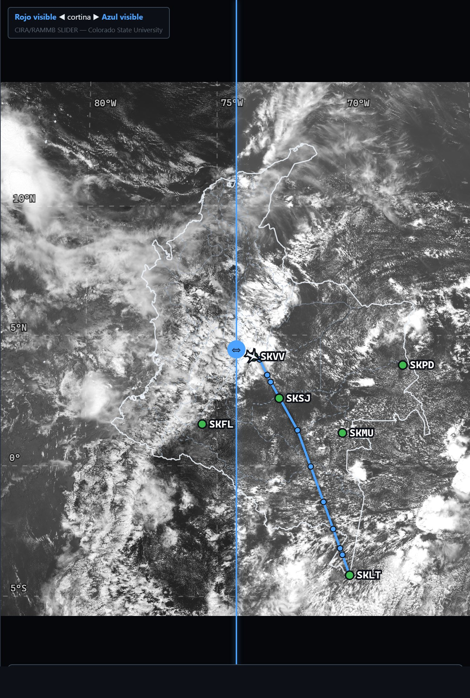
La cortina de Comparar bandas, aquí con rojo visible contra azul visible. Enfrentar dos canales sobre el mismo instante es lo que permitió verificar la medida.
La anécdota que conviene contar, porque es la que demuestra el método: una primera
versión del algoritmo daba topes de −88 °C que resultaron ser artefactos de compresión
del JPEG en el borde de los núcleos. Se detectó comparando la banda 13 con la 9, que
coinciden en 3–5 °C sobre topes altos. Por eso la severidad se clasifica hoy por
percentil 5 y no por el mínimo: el mínimo es un píxel suelto y se puede fabricar.
8Lo que el satélite no puede ver
Respaldo del bloque A. Decirlo uno mismo, y al principio, es lo que da credibilidad a lo demás.
1. Ve el tope, no la nube. Bajo esa superficie no hay dato: ni base de nube, ni
cizalladura, ni granizo en superficie. Cuando decimos «célula a 16 NM» es a 16 NM de su
centroide en el tope, no de la lluvia que cae debajo.
2. La altura es calculada, no medida. Sale de la temperatura con un gradiente tipo,
anclado en un METAR. Sin radiosondeo ese día no se puede verificar, y el visor lleva la
palabra «calculado» impresa al lado del número.
3. La escala satura. La barra publicada no rotula por debajo de −90 °C. Un valor de
−90 es un límite, no una medida, y sale marcado como tal.
4. Hay puntos ambiguos y se cuentan. No se rellenan con algo plausible. Que el panel
diga «18 de 170 sin lectura concluyente» es una función, no un fallo.
5. No ve la nube baja ni la niebla. Ese mismo día, hacia el mediodía, Leticia tuvo
OVC004 y BKN008 con BR. En el infrarrojo no aparece:
un estrato a 400 ft emite casi a la misma temperatura que el suelo tropical. Para techos
bajos, la observación de superficie no tiene sustituto.
6. Cuatro canales solo sirven de día. El 1, el 2, el 4 y el 5 son reflectivos. En
este caso no estorba —el vuelo es diurno—, pero hay que saber decirlo.
7. No hay descargas eléctricas ni radar. No disponemos del producto GLM ni de
cobertura radar en ese corredor. Todo lo que digamos de rayos y granizo es
inferencia por umbral, no observación.
La frase que cierra el bloque A y abre el de Ángela: «El satélite cubre el hueco
geográfico: los 553 NM entre aeródromos donde no hay estaciones. La observación de
superficie cubre el hueco vertical: lo que pasa bajo el tope de nube. Ninguna de
las dos sobra, y por eso el trabajo usa las dos.»
9Bloque B · Guion de Ángela — 7 min
Objetivo: que la sala vea qué había en el aire ese día y en qué canal se ve cada cosa.
Abre con la idea, no con el canal. «Un satélite meteorológico no toma una foto: toma
ocho, cada una en una longitud de onda distinta, y cada una contesta una pregunta
diferente. Ninguna sirve sola.»
Banda 13, la que mide. Con la barra en 2030Z: «Esta es la temperatura del tope. El
rojo son topes por debajo de −60 °C, que es el umbral de convección profunda. Aquí está el
gran sistema del oriente, y aquí, sobre nuestro último tercio, los núcleos que nos
importan.» (§10)
Bandas 9 y 10, la humedad. «Estas dos no ven el suelo: ven vapor de agua a dos
alturas. Y dicen algo importante: el corredor está seco en las dos capas, con la
humedad concentrada en los núcleos. El riesgo no está repartido por toda la ruta, está en
puntos concretos.» (§10)
Bandas 2 y 4, la estructura. «La 2 es la de máxima resolución: se ven las torres con
textura granulada y las sombras de los yunques. La 4 solo deja ver el hielo alto: el suelo
sale negro. Juntas fechan la fase madura — a las 1930Z ya hay torre y yunque sobre
el corredor, hora y media antes de que lleguemos.» (§11)
Banda 5, la fase. «Esta invierte el visible: el hielo sale oscuro y el agua
sobreenfriada sale clara. Es la banda del engelamiento.» (§12)
Ahora las nubes, con nombre. «Con eso podemos decir qué había: estratos bajos en
Villavicencio que se disipan, cúmulos de buen tiempo en el corredor que pasan a torres entre
las 1800Z y las 1900Z, y cumulonimbos con yunque en el último tercio desde las
2000Z.» (§14)
Y los fenómenos, separando lo medido de lo inferido. «Medimos topes de −71 a −74 °C.
De ahí inferimos granizo y actividad eléctrica probables, con el umbral estándar: no
los observamos. Lo que sí tenemos observado por dos instrumentos independientes es un
frente de racha en el Guaviare: la línea de cúmulos en el canal 2 y una racha de
21 kt en el METAR de San José.» (§15 y §18)
Cierra con el engelamiento, que es lo que enlaza con el vuelo. «Y una precisión que
casi siempre se dice mal: el engelamiento no está en el tope frío. Está alrededor de la
isocero, que ese día calculamos en FL150.» (§17)
Cómo pasas el turno a Leonardo: «Eso es lo que había en el aire. Ahora, qué de todo
eso se cruza con nuestro vuelo — y a qué hora.»
10Atlas de canales I · Las que miden
Respaldo del bloque B. Banda 13, 9 y 10, todas a 2030Z, el instante crítico. Aeronave en la milla 458.
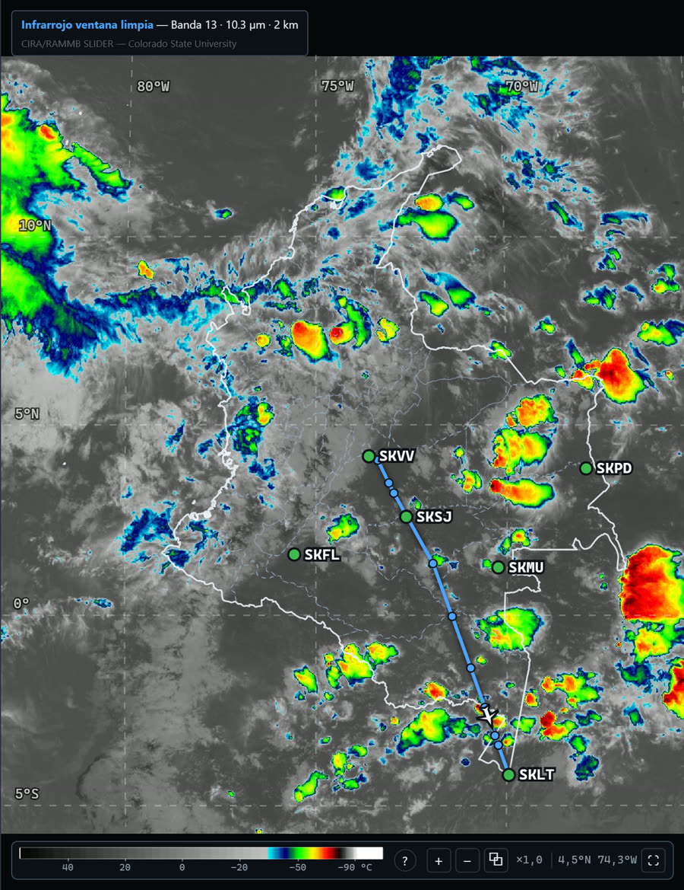
13 · IR ventana limpia (10,3 µm). Mide la temperatura del tope. Rojo y naranja = topes por debajo de −60 °C. Se ven los núcleos sobre el último tercio de la ruta y el gran sistema del oriente, fuera del corredor.
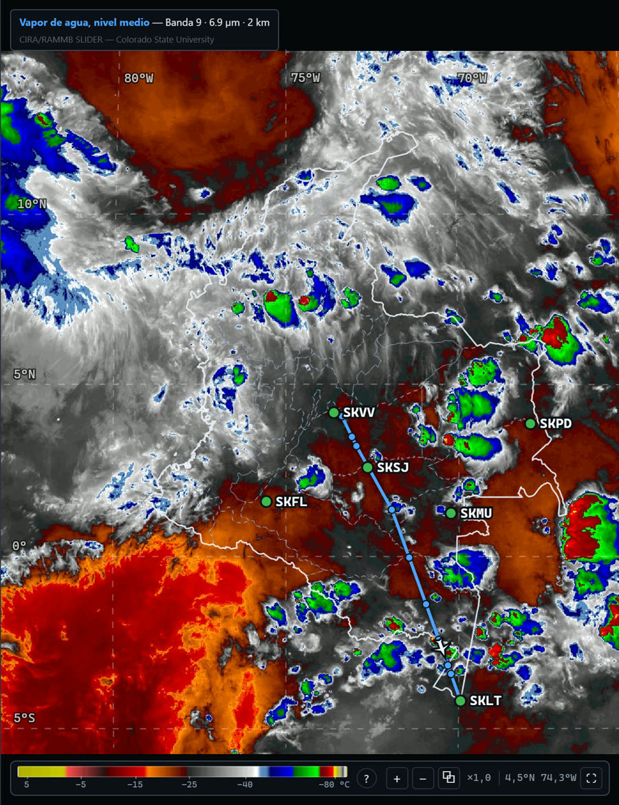
9 · Vapor, nivel medio (6,9 µm, 400–500 hPa). El corredor sale rojo oscuro = aire seco en niveles medios, con los núcleos húmedos en verde/azul encima. Los bordes entre seco y húmedo son los candidatos a cizalladura.
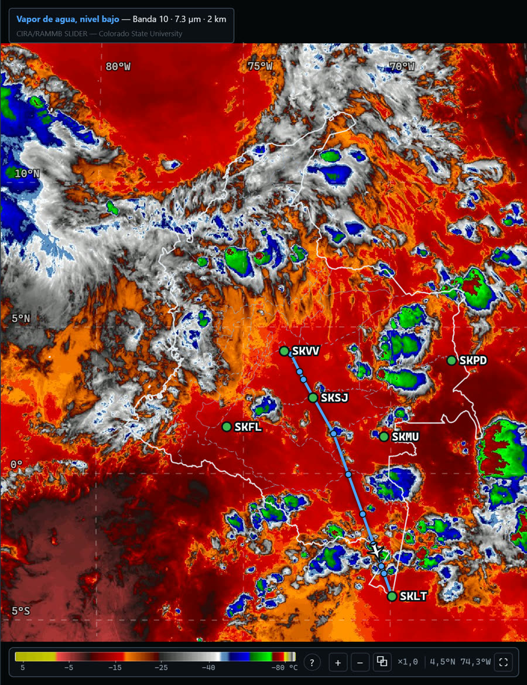
10 · Vapor, nivel bajo (7,3 µm, 600–750 hPa). Aún más seco: rojo vivo en casi todo el corredor. Es la capa de 8 000–13 800 ft, la del ascenso y el descenso.
Cuidado con una frase heredada. Nuestro propio rótulo —y el nefoanálisis que lo
copió— dice que la banda 10 es «la capa en la que vuela un turbohélice a FL210». No lo
es: FL210 ≈ 465 hPa, y la banda 10 pesa hacia 600–750 hPa. La que encuadra el nivel de
crucero es la banda 9. Lo que sí es cierto, y se ve en las dos imágenes, es que
ambas capas están secas sobre el corredor, con la humedad concentrada en los núcleos.
11Atlas de canales II · Las que muestran estructura
Respaldo del bloque B. Banda 2 y banda 4. Aquí no se mide: se ve la forma de la nube, que es otra evidencia.
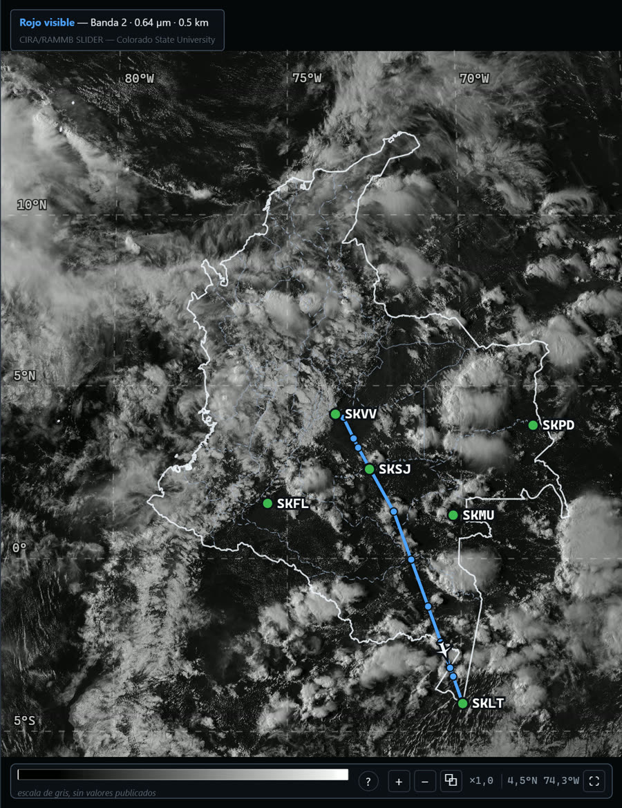
2 · Rojo visible (0,64 µm, 0,5 km). La resolución máxima del instrumento: torres con textura granulada, sombras de yunque, líneas de cúmulos.
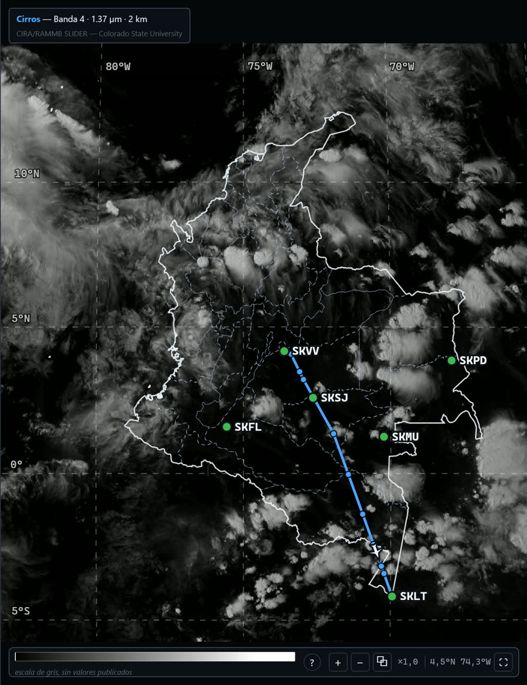
4 · Cirros (1,37 µm). El vapor bajo absorbe todo: suelo y nube baja salen negros, solo el hielo por encima de ~6 km brilla. Es el detector de yunque.
Lo que la banda 2 enseña de este día, siguiendo a la asesoría: la consolidación de
los núcleos durante la tarde y una franja que se extiende horizontalmente sobre el
centro del Amazonas, como una línea de convergencia. En la imagen se ve al sur de la
ruta, entre 1° y 3°S, orientada este-oeste.
Lo que la banda 4 enseña, y es un argumento fuerte: a las 2030Z el hielo alto
no cubre el corredor entero. Está en el último tercio, en el nororiente y en el
gran sistema del este. El corredor SKVV → SKSJ sale negro: no hay yunque encima.
Las dos juntas fechan la fase madura. A las 1930Z la banda 2 ya muestra torres
con textura granulada sobre el corredor central y la banda 4 muestra hielo brillante
en el mismo sitio. Torre + yunque de hielo = célula que ya descarga. Eso es una
hora y media antes de que el vuelo llegue allí.
12Atlas de canales III · Las de fase y las de apoyo
Respaldo del bloque B. Banda 5, banda 7 y banda 1. Las que más se malinterpretan.
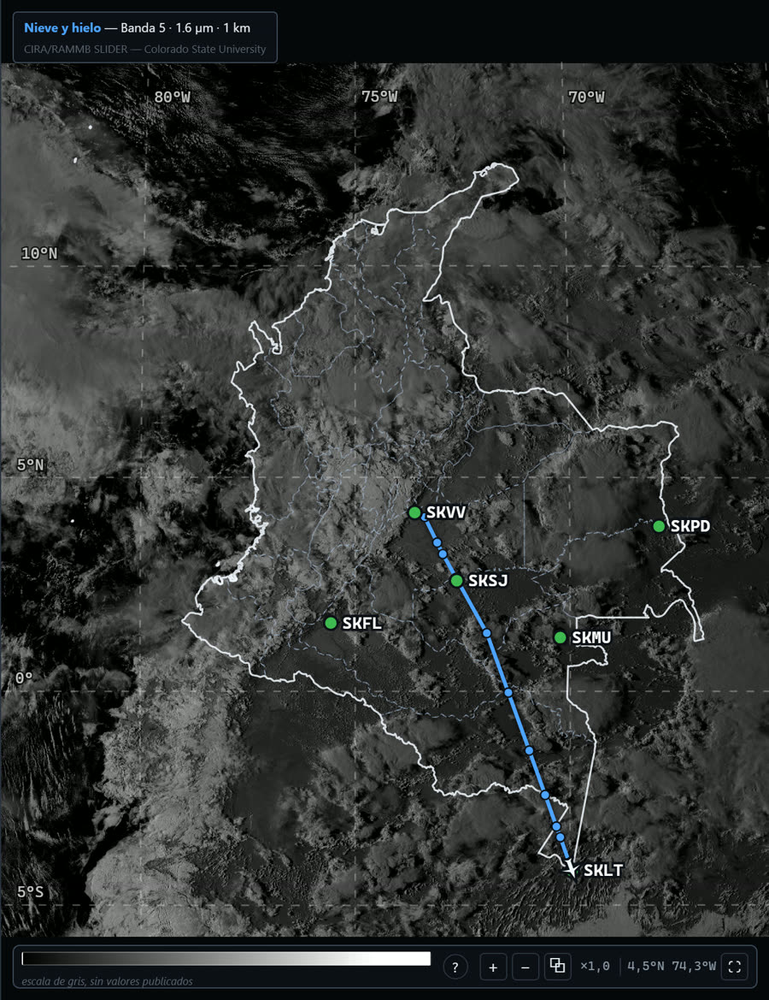
5 · Nieve y hielo (1,6 µm) a 2100Z. Invierte el visible: el hielo absorbe y sale oscuro, la gota de agua sobreenfriada sale clara.
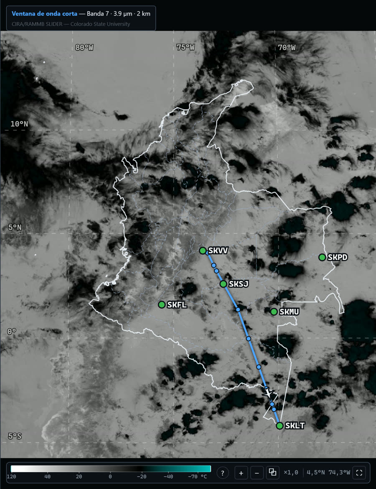
7 · Ventana de onda corta (3,9 µm). Mezcla emisión térmica y reflexión solar: las nubes de gota pequeña salen brillantes. De noche es el canal de la niebla.
Banda 5, la regla y su límite. La regla que trae la propia herramienta es «lo que
se ve claro aquí y frío en la banda 13 es lo que engela». Funciona, pero a la escala de
estas capturas la discriminación es cualitativa: se distingue el conjunto glaciado
del que no lo está, no el contorno exacto de la fase mixta. El nefoanálisis lo admite en
su propio apartado de limitaciones, y nosotros debemos decirlo igual.
La aclaración que da la asesoría y que vale oro en preguntas: «las nubes que están
por encima de la isocero, de unos 4 800 a 5 000 metros, son de hielo; allí es muy raro
encontrar agua líquida. El engelamiento es agua líquida que está por debajo de cero
grados.» Es decir: el riesgo no está en el tope frío, está en la capa alrededor de la
isocero. §17 lo desarrolla con nuestro número.
Banda 1 (azul visible) no se expone: su único papel aquí es descartar que el
blanco sea bruma o humo en vez de nube. Dicho en una frase y se pasa.
13Tabla maestra: qué revela cada canal y qué NO puede revelar
Respaldo del bloque B. Esta es la tabla que hay que saberse. Responde media docena de preguntas de golpe.
Canal
Fenómeno que revela
Cómo se lee
Lo que NO puede decir
13 · IR ventana limpia 10,3 µm · 2 km
Convección profunda, severidad, tope de nube
Temperatura de brillo por color. Bajo −60 °C: granizo, turbulencia severa y actividad eléctrica probables
Nada bajo el tope: ni base, ni granizo en superficie, ni si la célula crece o se disipa
9 · Vapor medio 6,9 µm · 400–500 hPa
Humedad y circulación en la capa del crucero; bordes de cizalladura
Los bordes entre claro y oscuro son cortantes de viento. Las manchas en sí importan menos
No ve el suelo. No mide viento: el cortante es inferencia del gradiente
10 · Vapor bajo 7,3 µm · 600–750 hPa
Humedad de la capa de ascenso y descenso (8 000–13 800 ft)
Frente a la 9: si la 10 está húmeda y la 9 seca, el aire seco de arriba frena el crecimiento
No es la capa de FL210, aunque nuestro rótulo lo diga
2 · Rojo visible 0,64 µm · 0,5 km
Torres activas, sombras de yunque, líneas de cúmulos, frentes de racha
Blanco intenso con textura granulada = desarrollo vertical activo. La sombra dice hacia dónde crece
Solo de día. No da temperatura ni altura
4 · Cirros 1,37 µm · 2 km
Yunque de hielo, glaciación de tope
Suelo y nube baja negros; solo brilla el hielo sobre ~6 km
Solo de día. No distingue yunque activo de cirro residual
5 · Nieve y hielo 1,6 µm · 1 km
Fase de la nube: hielo contra agua sobreenfriada → engelamiento
Invertido: hielo oscuro, agua clara. Claro aquí + frío en la 13 = engela
Lectura cualitativa, sin valores publicados. No cuantifica agua líquida
7 · Onda corta 3,9 µm · 2 km
Espesor y tamaño de gota; de noche, niebla y estratos bajos
De día mezcla emisión y reflexión: gota pequeña brillante
De día es ambigua; aquí solo corrobora
1 · Azul visible 0,47 µm · 1 km
Aerosol, bruma y humo
Comparada con la 2, separa aerosol de nube
Solo de día. Aporta poco en este caso
14Tipos de nube y altura
Respaldo del bloque B. La clasificación del nefoanálisis, contrastada con nuestras medidas y con la isocero.
Sector
Fase temprana · 1730–1800Z
Desarrollo · 1900–2000Z
Fase madura · 2100–2200Z
Villavicencio (SKVV)
St / Sc bajos, con componente orográfico del piedemonte
Sc en disipación · METAR: BKN050 a 1800Z, BKN040 a 1900Z
Cielo despejado · FEW060 a 2100Z, NSC a 2200Z
Ruta central Meta–Vichada–Guainía–Vaupés
Cu de buen tiempo, disperso
TCu en crecimiento activo · banda 2 granulada + banda 4 con hielo a 1930Z
Cb con yunque; Cs de origen convectivo
Último tercio y norte de Leticia
Sin nubosidad significativa
TCu incipiente desde 1900Z
Cb maduro con yunque. Topes medidos: p05 −71 a −74 °C, máximo derivado FL478
Sistema oriental fuera del corredor
Cu aislado
Cb en desarrollo activo
Cb maduro, yunque muy extenso
Fondo del dominio
Ci disperso
Ci en aumento
Ci/Cs extenso
Nivel
En este caso
Baja < 6 500 ft
St/Sc de SKVV: bases METAR entre 4 000 y 6 000 ft. El satélite no las ve: un estrato tropical emite casi a la temperatura del suelo
Media 6 500 – 20 000 ft
TCu en crecimiento, aún sin glaciación de tope (sin señal en banda 4). Aquí dentro está la isocero, FL150
Alta > 20 000 ft
Yunques de Cb (banda 4 desde 1900Z) y topes bajo −60 °C. Nuestro nivel de crucero, FL210, está en la base de esta capa
La pregunta que engancha aquí: «¿cómo clasifican la altura sin sondeo?». La
respuesta honesta: por método indirecto declarado — temperatura de brillo convertida con
un gradiente tipo de 6,5 °C/km anclado en el METAR real, umbral de ~6 km de la
banda 4 para el hielo, y bases METAR en pies para la capa baja. No hay radiosondeo
ese día, así que la altura es estimación declarada, no observación.
15Convección profunda, tormenta, granizo y rayo
Respaldo del bloque B. El fenómeno principal del caso. Lo que se mide, lo que se infiere y lo que no se sabe.
Qué
Estatus
Base
Convección profunda
Observado
Percentil 5 del tope entre −71 y −74 °C en cb-01, cb-02 y cb-03; tope máximo derivado FL478 a 2030Z. Medido sobre banda 13 invirtiendo la tabla ircimss2
Cumulonimbo maduro
Observado
Torre granulada en banda 2 + hielo brillante en banda 4, simultáneos sobre el corredor desde las 1930Z. Torre y yunque juntos = fase madura
Granizo en el núcleo
Inferido
Umbral estándar: topes bajo −60 °C son compatibles con granizo. No es una observación de granizo, y menos en superficie
Actividad eléctrica
Inferido
Mismo umbral. No hay producto de descargas (GLM) en este trabajo: no se puede cuantificar
Turbulencia convectiva
Inferido
Asociada a los núcleos y a los bordes de gradiente térmico abrupto. No medida
Tormenta declarada
Oficial, pero no en nuestra FIR
SIGMET EMBD TS de las FIR Amazónica y Lima, topes FL430–FL490, solapando la ventana del vuelo (§30)
Cómo se dice esto sin pasarse: «medimos un tope de −72,6 °C. De ahí inferimos,
con el umbral estándar, que hay granizo y actividad eléctrica probables. No los observamos:
para eso harían falta radar y detección de descargas, y los declaramos como pendientes.»
Esa frase, dicha antes de que la pregunten, vale más que cualquier dato.
Y el matiz temporal que casi nadie dice: la temperatura sola no distingue una célula
que crece de una que se disipa. Para eso está la serie de área y percentil cuadro a cuadro
que guarda cada ficha — y es lo que permite afirmar que cb-03 llevaba dos horas
organizada cuando el vuelo llegó a su altura.
16Turbulencia en aire claro y cizalladura
Respaldo del bloque B. El fenómeno más citado y el peor sostenido. Hay que ser especialmente cuidadosos.
Banda 9 a 2030Z. Lo que importa no son las manchas verdes sino los bordes entre el rojo oscuro (seco) y el claro (húmedo): ahí es donde hay cortante.
El razonamiento estándar, y el que usa el nefoanálisis: un límite marcado entre
zona clara y zona oscura en vapor de agua indica un cortante de viento, y en los cortantes
aparece la turbulencia en aire claro. En el corredor esos bordes existen: se ven al
aproximarse a Amazonas y a Leticia.
Pero nosotros NO lo afirmamos, y hay que decirlo: nuestro motor no calcula
cizalladura, no hay viento en altura en el conjunto de datos y no hay PIREP que lo
corrobore. Es una hipótesis razonable de un experto sobre una firma visual, no
una medida de este trabajo. Si preguntan, esa es la respuesta exacta.
Lo que sí podemos sostener es el hallazgo de la banda 10: la capa de 600–750 hPa
—la del ascenso y el descenso— está seca en casi todo el corredor, con la humedad
concentrada en los núcleos. Eso significa que el riesgo de cizalladura en esa capa
se concentra en los bordes puntuales de las celdas y no en un deterioro homogéneo de
toda la ruta, que es una conclusión operacional útil y medible en la imagen.
Cizalladura de bajo nivel es otra cosa y esa sí la tenemos observada: está en el
frente de racha de §18, y la firma la dio un METAR, no el satélite.
17Engelamiento: dónde está de verdad la capa crítica
Respaldo del bloque B. Aquí las tres fuentes se cruzan y sale el hallazgo más redondo del trabajo.
La regla física, de la asesoría. «Las nubes por encima de la isocero, de unos
4 800 a 5 000 metros, son de hielo; allí es muy raro encontrar agua líquida. El
engelamiento es agua líquida que está por debajo de cero grados.» Es decir: el
riesgo no está en el tope frío, está alrededor de la isocero.
Nuestro número, anclado en el METAR del día. Con el mismo gradiente que usa el
visor (6,5 °C/km) y la temperatura real de superficie, la isocero del caso queda en
14 900 ft en SKLT y 15 500 ft en SKVV — en números redondos, FL150.
El aviso oficial. La FIR Amazónica publicó ese día el SIGMET 41: engelamiento
SEVERO entre FL140 y FL230, válido 1530–1930Z, con su contorno a 79 NM de la ruta.
Nuestra isocero calculada cae dentro de esa banda, en su parte baja.
Y el cruce que lo cierra todo. Nuestro perfil de descenso atraviesa los 15 000 ft
en la milla 506, a las 2042Z, entre TOD y ROKUL. Es decir: el avión cruza la
capa de engelamiento justo en el tramo y en el minuto en que cb-02 está a 15,9 NM.
La frase, y es de las mejores que tienen: «El engelamiento no nos preocupa en
crucero: a FL210 estamos 6 000 ft por encima de la isocero, en régimen de hielo. Nos
preocupa en el descenso, porque cruzamos los 15 000 ft en la milla 506 a las
2042Z, dentro del tramo que nuestra propia regla marca como EVITAR, y dentro de la
banda de niveles que un SIGMET oficial declaró de engelamiento severo esa tarde.»
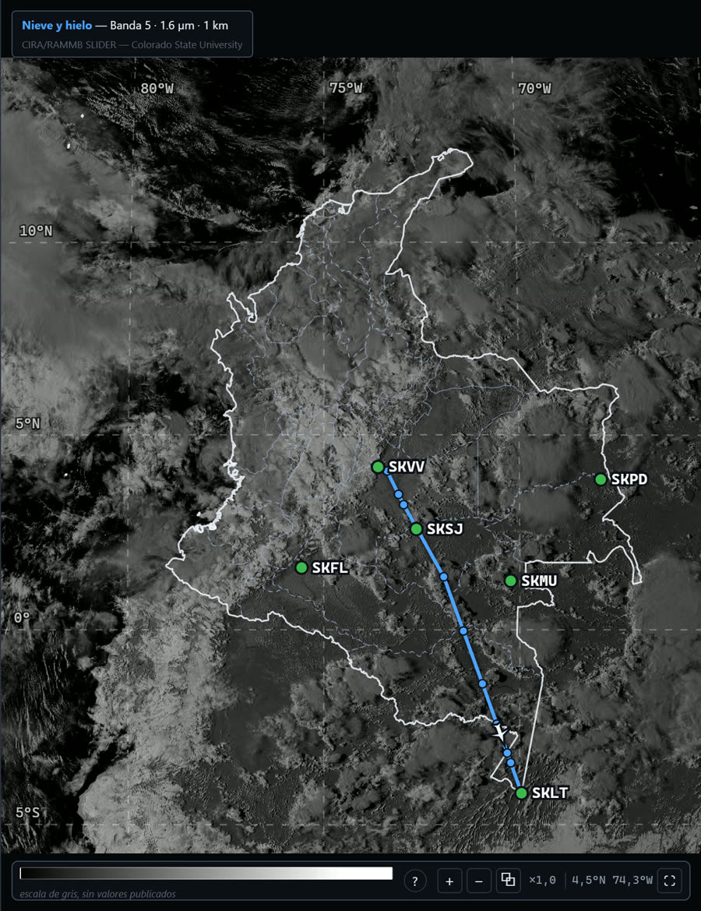
Banda 5 a 2030Z: el canal de la fase. Oscuro = hielo; claro = agua sobreenfriada.
Honestidad sobre la fase mixta: el nefoanálisis afirma haber confirmado fase mixta en
los flancos de las celdas cruzando banda 5 y banda 13. Es plausible y coherente con el SIGMET,
pero la lectura de la banda 5 es cualitativa —sin valores publicados— y él mismo lo
reconoce en sus limitaciones. Nosotros lo presentamos como hipótesis bien fundada, no
como medida.
18El frente de racha del Guaviare
Respaldo del bloque B. El fenómeno que no estaba en ningún informe escrito y que sí tenemos confirmado desde dos fuentes.
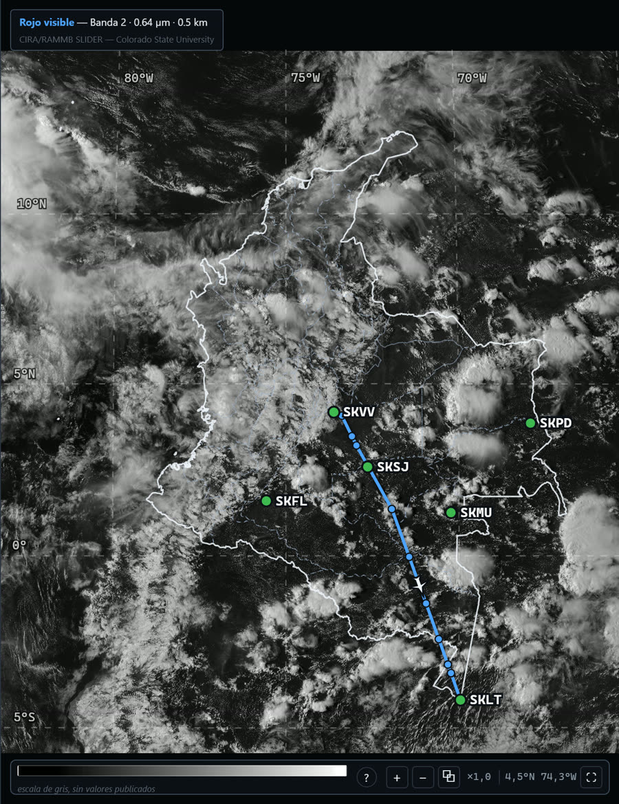
Banda 2 a 2000Z, resolución de 0,5 km. La convección al oriente de SKSJ, con la línea de cúmulos bajos que delata la salida de aire frío.
Lo que dice la asesoría, mirando el canal 2: «se observan tormentas y se observa
salida de microrreventones, es decir, en niveles bajos se observa una corriente de
aire que está generando una línea de cúmulos de bajo nivel».
Lo que dice el METAR, sin saber nada del satélite. San José del Guaviare, 2000Z:
Viento de 11 kt con racha de 21 kt y capa fragmentada a 4 500 ft, cuando una hora
antes el viento era variable de 2 kt. Eso es la firma clásica de un frente de racha:
el aire frío que sale de la base de la tormenta y se extiende por superficie.
Por qué esto vale tanto: es el único fenómeno del caso observado por dos
instrumentos independientes —la estructura en el visible y la racha en la estación—
y ninguno de los dos informes escritos lo recogió. El nefoanálisis llega a proponer
SKSJ como uno de los dos alternos más seguros sin mencionar la racha; nuestro
informe tampoco la destacó. Decirlo nosotros, y decir que se nos había pasado, es
exactamente el tipo de rigor que se premia.
Nota de trazabilidad: el nombre del departamento en el audio queda confuso en la
grabación. Lo situamos en Guaviare porque es donde está SKSJ y porque es la estación que
registra la racha; si en la exposición hace falta, se dice así de claro.
19Visibilidad, precipitación y nubosidad baja
Respaldo del bloque B. Lo que el satélite NO vio, y por qué eso también es un resultado.
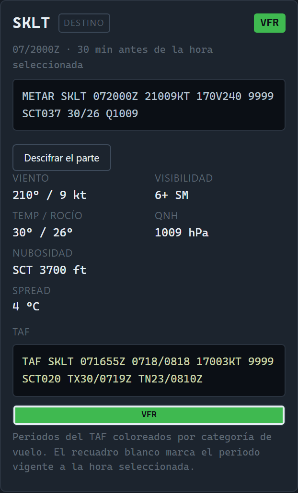
La tarjeta de SKLT en el visor, con la secuencia horaria y su categoría.
Hora
Categoría
Qué informa la estación
1800Z
VFR
9999 SCT023 — sin fenómeno
1900Z
VFR
9999 2000E RA SCT020 — lluvia, con 2 000 m al este
2000Z
VFR
9999 SCT037 — tregua
2100Z
MVFR
8000 VCSH SCT020 — chubascos en la vecindad
2200Z
VFR
9999 SCT020 — recupera
El grupo de las 1900Z es el mejor dato del contraste y el nefoanálisis se lo perdió.
Dice que la precipitación se confirma a las 2100Z. Es dos horas antes, y coincide
exactamente con la hora en que las tres fuentes sitúan la primera señal convectiva
al norte de Leticia. Ese RA de las 1900Z es la confirmación en tierra de lo
que el infrarrojo estaba viendo desde arriba.
Y lo que el satélite no vio. Ese mismo día, hacia el mediodía, SKLT tuvo
OVC004 y BKN008 con BR. En el infrarrojo no aparece:
un estrato a 400 ft emite casi a la misma temperatura que el suelo tropical, y la máscara
de nube —que exige 10 °C de diferencia con el METAR de anclaje— no lo separa del terreno.
Para techos bajos y niebla, la observación de superficie no tiene sustituto.
20Bloque C · Guion de Leonardo — 6 min
Objetivo: cerrar con una decisión defendible y con números, no con una impresión.
Pon el reloj del vuelo encima del día. «Todo lo que acaban de ver ocurre mientras
nosotros volamos. Salimos a las 1830Z, cuando hay dos células. Llegamos a las 2055Z, cuando
hay trece. El campo convectivo se organiza contra nuestro reloj.»
(§21)
El corte vertical, dos veces. Barra en 1830Z: «el 2 % de la ruta tiene topes por
encima de nuestro nivel; con esta imagen salimos tranquilos». Arrastra a 2030Z y calla:
«14 %. Y el tope máximo pasa de FL236 a FL478.» (§22)
Nombra el sitio. «Lo que empeora no es la ruta entera: es el último tercio. Los
conflictos que coinciden con nuestra posición están todos más allá de la milla 450 —
descenso y aproximación a Leticia.»
Tramos y la regla. «El criterio está escrito en la pantalla: EVITAR si el 20 % del
tramo tiene topes sobre el nivel, o si una célula pasa a menos de 25 NM en el momento en
que estamos ahí.» Despliega ASKAT → DADIL: 20 %, FL431.
(§23)
El EFB y el punto de decisión. «A las 2030Z llevamos 458 NM de 553, y hay dos alertas
rojas. Sobrevolar: NO VIABLE, y dice por qué. Desviarse 9 NM para separarse 25:
1,1 NM de coste.» (§24)
El dato que casi nadie ve. «Y el descenso cruza la isocero —FL150— en la milla
506, a las 2042Z, entre TOD y ROKUL: atravesamos la capa de engelamiento justo donde y
cuando está la célula.» (§17)
Destino y alternos. «En tierra Leticia nunca baja de MVFR: lo peor son 8 000 m con
VCSH a las 2100Z. Los cuatro alternos en VFR a la hora de llegada, así que decide la
distancia: SKMU, a 327 NM.» (§25)
La decisión. «GO con desvío planificado. Lo que no es defendible es volar la
trayectoria publicada sin desvío entre las 2030Z y las 2040Z.»
21El día contra el reloj del vuelo
Respaldo del bloque C. Banda 13 de punta a punta, con la hora del vuelo al lado.
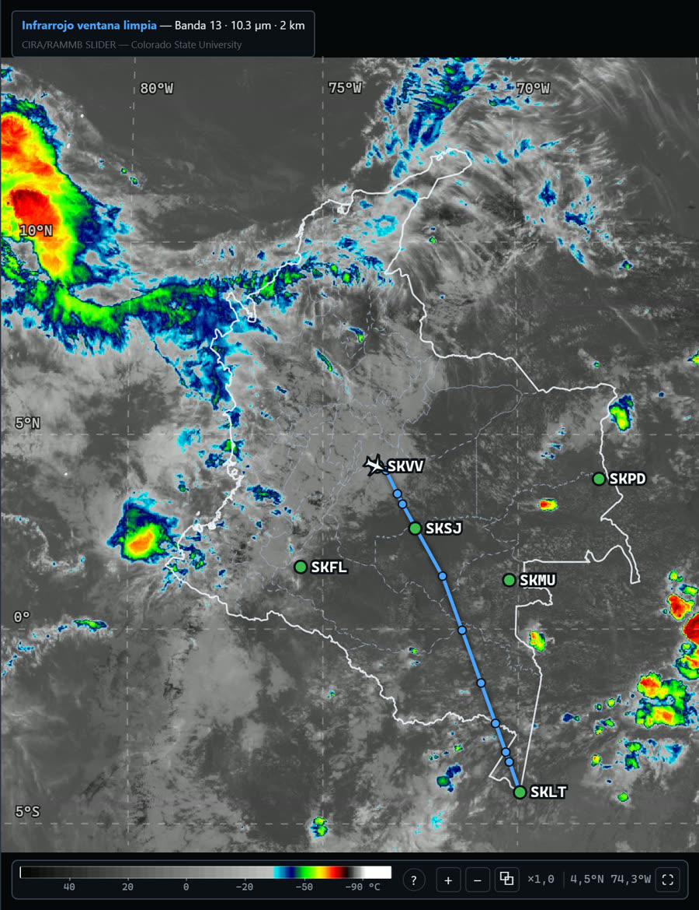
1730Z · una hora antes de la salida.
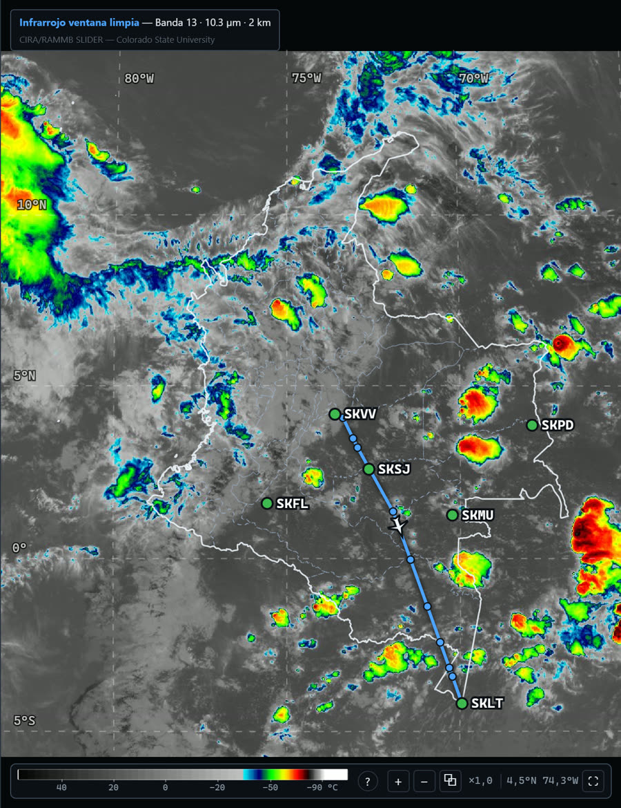
1930Z · una hora de vuelo.
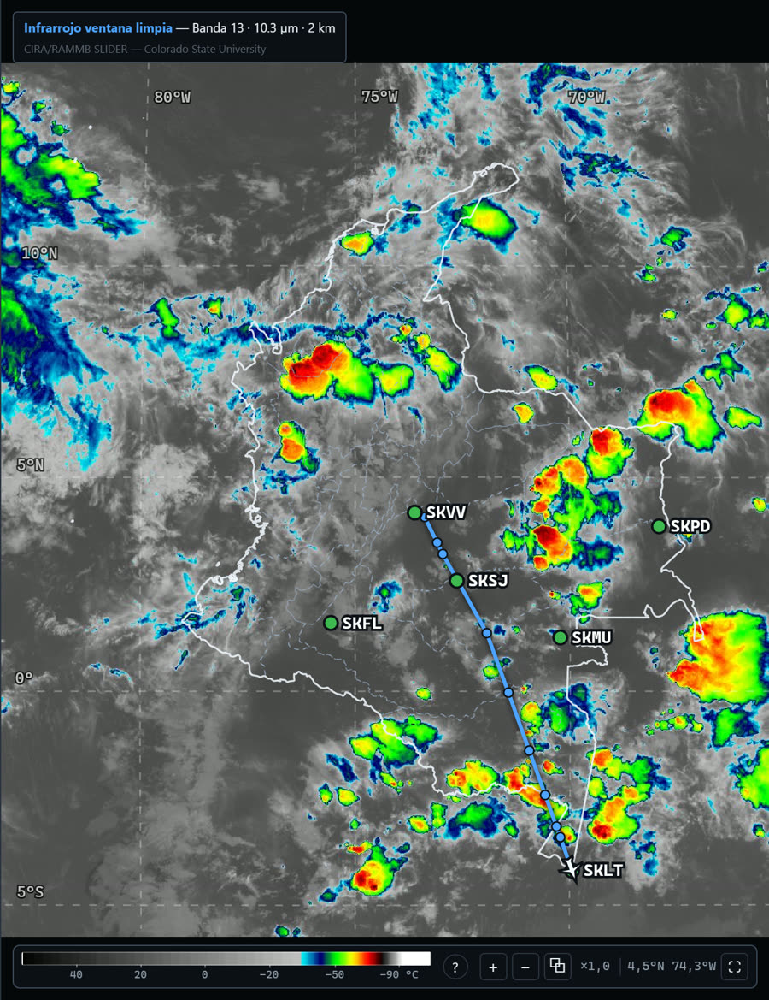
2200Z · una hora después de aterrizar.
Hora
Qué está pasando
1730Z
1 célula seguida, p05 −65,9 °C, en Guainía a 74 NM de la ruta. Corredor despejado.
1830Z
Salida. 2 células. El 2 % de la ruta con topes sobre FL210; máximo FL236.
1900Z
5 células. Nace cb-03, la que luego cruzará la traza. Torres en banda 2 y yunque en banda 4 sobre el corredor central. En SKLT, METAR con RA y 2 000 m al este.
1930Z
6 células. El 5 % de la ruta bloqueado; máximo FL327.
2000Z
11 células. Racha de 21 kt en SKSJ: frente de racha (§18).
2020Z
Pico: 13 células vivas, la más fría a −76,6 °C.
2030Z
El momento. 14 % de la ruta bloqueado, máximo FL478. cb-01 a 16,3 NM y cb-03 a 19,2 NM de la aeronave, en la milla 458.
2040Z
cb-02 a 15,9 NM en la milla 496. El descenso cruza la isocero en la milla 506 (§17). ETA 2055Z, destino en VFR.
2100Z
SKLT en MVFR: 8 000 m y VCSH. SKMU con FEW048TCU.
2200Z
SKLT vuelve a 9999. Pero el campo convectivo sigue activo: nuevo cúmulo grande al nororiente de SKSJ y el sistema oriental en su máximo.
22El corte vertical: 1830Z → 2030Z
Respaldo del bloque C. La gráfica que contesta la pregunta del trabajo.
1830Z, hora de salida: columnas bajas, 2 % de la ruta por encima de la línea azul de FL210.2030Z: 14 %, y columnas verdes y naranjas asomando muy por encima del nivel.
Hora
Puntos con nube
Sobre FL210
Tope máximo
Tb mínima
1830Z
93 de 170
4 · 2 %
FL236
−86,0 °C
1930Z
110
8 · 5 %
FL327
−83,3 °C
2030Z
76
24 · 14 %
FL478
−83,3 °C
La lectura, y es la conclusión central del trabajo: la fracción de ruta bloqueada
al nivel de crucero se multiplica por siete entre la salida y el final del
trayecto. Un análisis hecho solo con la imagen de la hora de salida habría declarado la
ruta prácticamente limpia —2 %— y habría fallado justo donde importa.
Ojo con una trampa de lectura: a 2030Z hay menos puntos con nube que a 1930Z
(76 contra 110) y sin embargo hay el triple de ruta bloqueada. No es contradicción: la
nubosidad dispersa y baja se reorganiza en menos núcleos, pero mucho más altos. Si alguien
lo pregunta, esa es la respuesta.
23Tramos y la regla de decisión
Respaldo del bloque C. Aquí el análisis deja de describir y se moja.
La pestaña a 2030Z: veredicto de ruta, tres fases y diez tramos.El tramo que marca el veredicto, desplegado.La regla, impresa en la propia interfaz.
La ruta se parte en sus diez tramos reales entre puntos publicados, en el orden en
que se vuelan, y cada uno recibe una etiqueta con el motivo escrito al lado. El veredicto
de la ruta es el del peor tramo: una ruta con nueve tramos libres y uno que hay que
evitar es una ruta que hay que replantear.
El matiz que hay que decir en voz alta, porque está al pie de la regla: el criterio
mira el momento en que la aeronave pasa por el tramo, no la ventana entera. Una
célula que nace cuando el avión ya ha pasado no penaliza el tramo. Sin ese matiz,
cualquier ruta amazónica en una tarde de septiembre saldría EVITAR de punta a punta.
Y el paréntesis donde más se tropieza: «20 % (14/20 puntos con nube)» quiere
decir que el tramo tiene 20 puntos muestreados, de los cuales 14 tienen nube, y
que el 20 % del tramo —4 de esos 20— tiene el tope por encima de FL210. El
porcentaje y el paréntesis miden cosas distintas.
24El EFB y el punto de decisión
Respaldo del bloque C. Lo que tendría delante la tripulación, con el coste de cada opción calculado.
El EFB a 2030Z, con sus seis bloques.
Opción
La cuenta que trae
Mantener ruta y nivel
Paso a 15,9 NM del centro de cb-02 a las 2040Z. Sin coste en tiempo ni combustible
Desvío lateral de 9 NM
Separación resultante ≈ 25 NM. Coste 1,1 NM, por la geometría de un quiebro simétrico sobre un tramo de 150 NM: 2·(√((150/2)² + d²) − 150/2)
Sobrevolar
NO VIABLE, y dice por qué: el percentil 5 del tope es −71,2 °C, muy por encima de cualquier nivel disponible para un ATR 72-600
Desviar a SKMU
238 NM desde la posición actual, unos 57 min, y la categoría que tendría el alterno a la hora de llegar
Cuándo aparece el panel, que es la mitad del argumento: no es un guion. Se dispara
con el encuentro calculado con la célula más comprometida —la que pasará a menos
de 25 NM— y solo dentro de los 20 minutos previos al punto de máxima
aproximación. Antes no hace falta decidir; después ya no sirve de nada.
Y el detalle que distingue un panel serio de una animación: la distancia a cada
célula se mide contra el paso más cercano en el tiempo, no contra su geometría de
máximo desarrollo. Una célula que a las 2030Z está a 18 NM pudo estar a 80 NM a las 1950Z.
25Destino, alternos y la bitácora
Respaldo del bloque C. Dónde termina el análisis y empieza la decisión operacional.
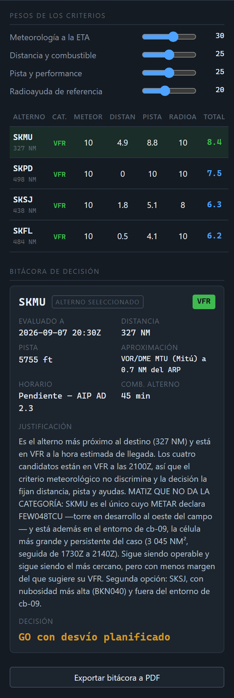
La matriz de alternos del visor, con su criterio ponderado.
Alterno
Categoría
METAR a 2100Z y lectura
SKMU
VFR
FEW048TCU — operable, pero el único con torre en desarrollo declarada, y está en el entorno de cb-09
SKSJ
VFR
36005KT BKN040 — operable. Pero a las 2000Z dio racha de 21 kt: el frente de racha de §18
SKPD
VFR
FEW030 — el más despejado
SKFL
VFR
FEW040 — mejora sostenida toda la tarde
Los cuatro están en VFR a la hora de llegada, así que el criterio meteorológico
no discrimina: la decisión la toman distancia, pista y ayudas. Y hay una restricción
que no depende del tiempo y que conviene decir: ningún alterno colombiano queda cerca
de SKLT. El más próximo, SKMU, está a 327 NM. Cualquier desvío desde el área de
Leticia es, por definición, un desvío largo.
La decisión, tal como queda en la bitácora:GO con desvío planificado. La
ruta es volable al nivel asignado durante los dos primeros tercios; el conflicto está
acotado en espacio y tiempo; el destino permanece operable —MVFR en su peor momento— y
hay cuatro alternos en VFR. Lo que NO es defendible es volar la trayectoria publicada
sin desvío entre las 2030Z y las 2040Z.
Pendientes declarados: los mínimos de aproximación (AD 2.19), el horario (AD 2.3) y
los servicios (AD 2.4) no están en la base aeronáutica cargada, igual que los designadores
de aerovía. Ninguno se ha rellenado con un valor plausible.
26Las tres fuentes: qué aporta cada una
Saber qué tipo de evidencia es cada cosa es la mitad de la defensa.
Fuente
Qué es
Qué aporta que las otras no
Su límite
Nefoanálisis del meteorólogo 22 páginas, 8 bandas, 42 capturas horarias
Análisis cualitativo completo, banda a banda y sector a sector, con clasificación de nubosidad
El marco de interpretación: nomenclatura de géneros, deslinde entre observación e inferencia, y la lectura del sistema oriental que queda fuera de nuestro recorte
Sin cifras propias: no mide distancias, topes ni encuentros. Capturas horarias, no la secuencia de 10 min
Nuestro motor analítico 223 cuadros, 8 bandas, 470 METAR
Medida reproducible: temperatura de brillo por inversión de la tabla de color, seguimiento de células, perfil de ruta, veredicto por tramo
Los números y el tiempo: 2 %→14 %, topes FL236→FL478, encuentros a 16–19 NM, hora y milla exactas
Solo 120 NM alrededor de la ruta, y solo las 14 células más relevantes para este vuelo. No es un censo del campo convectivo
Asesoría grabada 7 min 32 s, transcritos
Criterio experto sobre cómo se hace un briefing y qué mirar en cada canal
El método (zoom extendido primero), el marco sinóptico (ZCIT), la física del engelamiento y dos fenómenos que nadie había escrito: la línea de convergencia y el frente de racha
Es asesoría de método, no análisis del caso: no da cifras. Y la transcripción automática tiene ruido en algunos topónimos
Cómo presentarlo: «Tenemos tres fuentes independientes: un análisis cualitativo
externo, nuestra propia medición sobre las imágenes, y la asesoría de un meteorólogo en
ejercicio. Coinciden en el qué, el dónde y el cuándo. Donde no coinciden, lo hemos medido
y les decimos cuál gana y por qué.» Eso es exactamente lo que sigue en §27, §28 y §29.
27Nefoanálisis: los ocho puntos que confirma
Contrastado contra nuestros datos congelados. Esto se puede afirmar en sala.
Lo que dice el informe del meteorólogo
Con qué de lo nuestro se sostiene
Convección diurna en agregación, intensificación durante la tarde
✓ Nuestro perfil de ruta: 2 % → 5 % → 14 % de puntos con tope sobre FL210 entre 1830Z y 2030Z
Ventana de transición sobre el corredor central entre 1800Z y 1900Z
✓ Pasamos de 1 célula viva a las 1820Z a 5 a las 1900Z. Y banda 2 + banda 4 muestran torre y yunque juntos a 1930Z
Máxima criticidad en aproximación y descenso a Leticia, junto al ETA
✓ Las tres células que interceptan al vuelo lo hacen a 16–19 NM entre 2030Z y 2040Z, más allá de la milla 450
Topes < −60 °C compatibles con granizo, turbulencia severa y actividad eléctrica
✓ Percentil 5 de −71,2, −72,6 y −73,9 °C en cb-02, cb-01 y cb-03
El TAF no anticipó el desarrollo observado
✓ y más fuerte: el TAF de SKLT (071655Z) es 17003KT 9999 SCT020, sin un solo TEMPO ni PROB. No se quedó corto: no lo contempló
Precipitación y pérdida de visibilidad confirmadas por METAR en Leticia
✓ 2100Z: 8000 VCSH, categoría MVFR. Literal — aunque empezó antes (§19)
Asimetría este-oeste en los alternos
✓ SKFL mejora sostenida; SKMU con VCSH a 1900Z y FEW048TCU a 2100Z
Sistema oriental de gran escala e intensidad severa, fuera de la ruta directa
✓ Se ve en nuestra propia banda 13 en el borde oriental del recorte, con núcleos rojos persistentes. Queda fuera de nuestro corredor de 120 NM, así que no lo medimos: su descripción es aporte suyo
28Nefoanálisis: las seis correcciones
Dos de ellas son errores nuestros. Llevarlas sabidas es lo que da autoridad.
Afirmación
Lo que dice el dato
1
«No se dispuso de SIGMET/AIRMET vigentes»
Falso. Hay 225 SIGMET congelados de ese día y dos tocan el caso de lleno (§30). Es la corrección más importante y juega a favor de sus conclusiones
2
«Núcleo convectivo local sobre el entorno inmediato de Leticia»
Al norte, no encima. El centroide más cercano a SKLT de las catorce células queda a 52 NM. La asesoría grabada dice lo mismo: «se están formando núcleos convectivos hacia el norte de la ciudad». Lo que llovió sobre el aeródromo fue de escala menor que nuestro umbral de 320 km²
3
«Topes < −60 °C desde ~2000Z»
Antes. cb-09 ya tiene percentil 5 de −65,9 °C en el primer cuadro, 1730Z. Había convección profunda desde el inicio de la ventana, a 74 NM de la ruta
4
«Banda 10 (600–750 hPa) es la capa en la que vuela el avión a FL210»
Error físico — y es nuestro: lo copiaron de nuestro propio rótulo. FL210 ≈ 465 hPa; la banda 10 pesa hacia 600–750 hPa, o sea 8 000–13 800 ft. La que encuadra FL210 es la banda 9. Su observación de fondo seco es correcta; la etiqueta de la capa, no
5
«Precipitación en Leticia confirmada a las 2100Z»
Se les escapó lo mejor. El METAR de las 1900Z ya trae 9999 2000E RA. Dos horas antes, y coincide con su propia «primera señal convectiva sobre SKLT a las 1900Z»
6
«SKSJ estable/favorable» y «SKPD con BKN030 a 1900Z y TCU»
Dos fallos de alterno. SKSJ a 2000Z da 36011G21KT BKN045: racha de 21 kt, el frente de racha de §18, y lo proponen como alterno seguro sin citarla — nuestro informe tampoco la destacó. De SKPD no hay METAR entre 1800Z y 2100Z: ese BKN030 no está en el conjunto, y el TCU es de SKMU
Una corrección que nos hacemos a nosotros mismos, y hay que decirla si sale el tema:
en una versión anterior de este contraste dijimos que la actividad decaía tras las
2020Z, apoyándonos en que nuestras células vivas bajan de 13 a 5. Era una lectura
indebida: nuestro catálogo tiene solo las 14 células más relevantes para este vuelo,
así que su decaimiento no describe el campo. La banda 13 a 2200Z muestra el campo bien
activo, con un cúmulo nuevo al nororiente de SKSJ. La «intensificación sostenida» del
nefoanálisis se sostiene; lo que decae son las células que nos amenazaban a nosotros.
29La asesoría grabada: lo que añade
Siete minutos y medio de un meteorólogo en ejercicio: método y dos fenómenos nuevos.
Lo que dice
Estatus
Contraste con lo nuestro
Empezar el briefing por el canal 13 con zoom extendido, y solo después bajar al territorio
Método
Adoptado en el guion (§3 y §4). Es la forma correcta de abrir, y da autoridad citarlo
ZCIT al norte del territorio extendiéndose hacia el Pacífico; ningún otro patrón importante ese día
Confirmado
Visible en nuestra banda 13 como la franja nubosa del norte: nos da el marco sinóptico que no teníamos escrito
A las 1800Z Orinoquía y Amazonía mayormente despejadas, con núcleos en Guainía y centro del Vichada
Confirmado
2 % de ruta bloqueada y una sola célula viva. cb-09, la mayor del caso, nace en Guainía a las 1730Z
En SKLT se forman núcleos al norte de la ciudad
Confirmado
Coincide con nuestro dato (52 NM al norte) y corrige al nefoanálisis. §28, corrección 2
Línea de convergencia sobre el centro del Amazonas, extendida horizontalmente
Nuevo
Visible en nuestra banda 2 al sur de la ruta, entre 1° y 3°S. No estaba en ningún informe
Microrreventones y línea de cúmulos de bajo nivel en el Guaviare
Nuevo y confirmado
La racha de 21 kt de SKSJ a las 2000Z. Dos instrumentos independientes, un fenómeno. §18
El vuelo «podría encontrar hacia el final de la trayectoria nube de desarrollo vertical asociada a turbulencia, engelamiento y tormentas eléctricas», y «podría dar lugar a un SIGMET»
Premonitorio
Es lo que pasó y lo que dice nuestro análisis. El SIGMET se emitió — pero en las FIR vecinas, no en la nuestra (§30)
Otras tres cosas que dice, ya tratadas en otro sitio. Que en SKVV la nubosidad baja se
disipa con la tarde: cierto, con el matiz de la capa fragmentada de 1800–1900Z (§28). Que la
isocero está en 4 800–5 000 m: con el METAR del día nos sale algo más baja, FL150 (§17). Y que
conviene mirar el producto GeoColor / fase de nubes de SLIDER —agua blanca, hielo
azul— para afinar el engelamiento: no está en nuestro conjunto congelado, y es la ampliación
natural del trabajo.
30Los SIGMET: el argumento más fuerte del caso
El nefoanálisis los dio por inexistentes. Están, y cambian el peso de la conclusión.
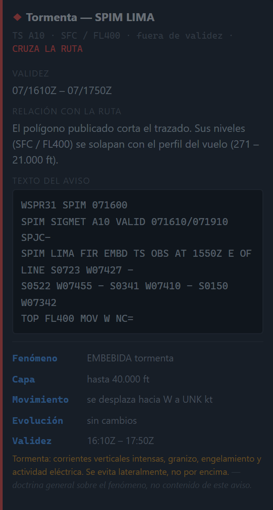
La ficha de un SIGMET en el visor: validez, relación calculada con la ruta —«el polígono publicado corta el trazado»— y el texto íntegro del aviso.
Aviso
Qué dice
SKED FIR Bogotá — la nuestra
Ese día emitió dos SIGMET, los dos de ceniza volcánica del Puracé. Ninguno de tormenta.
SBAZ 51 FIR Amazónica
EMBD TS, tope FL460, válido 1930–2330Z. Su contorno pasa a 31 NM de Leticia: cubre la ventana exacta de nuestra aproximación
SBAZ 41 FIR Amazónica
SEV ICEFL140/230, válido 1530–1930Z, a 79 NM de la ruta. Caducó antes de nuestro paso, pero documenta la capa de engelamiento de esa tarde — y nuestra isocero calculada cae dentro (§17)
SPIM A10/A12 FIR Lima
EMBD TS con topes FL400 y FL450, solapando la ventana del vuelo. El visor calcula que el polígono de A10 corta el trazado y que sus niveles se solapan con el perfil
Dilo así, y es probablemente la frase más fuerte de toda la sustentación:
«La FIR que nos corresponde no emitió ni un solo SIGMET de tormenta ese día. Las dos FIR
vecinas sí: tormenta embebida con topes de FL460 a 31 millas de nuestro destino, en la
hora exacta de la aproximación. El aviso oficial para nuestro espacio aéreo estuvo mudo;
el satélite no. Y el meteorólogo que nos asesoró, viendo solo las imágenes, ya había
dicho que ese día podía dar lugar a un SIGMET.»
31Preguntas · el instrumento y el método — las contesta Cristian
La respuesta correcta a casi todas empieza reconociendo el límite.
Pregunta
Respuesta
¿De dónde sacan la temperatura si trabajan con JPEG?
De invertir la tabla de color publicada por SLIDER, ircimss2, congelada en el proyecto. No son radiancias calibradas del ABI y lo decimos: es el producto renderizado, con 192 escalones y compresión de por medio
¿Y si el color es ambiguo?
Lo es: esa tabla usa el gris dos veces, para lo muy cálido y para lo muy frío. Se resuelve por conectividad —el gris alcanzable desde el borde es suelo— y lo que queda sin resolver se rotula «ambiguo». Entre 7 y 18 de los 170 puntos del perfil, según la hora
La altura del tope, ¿está medida?
No. Es un cálculo desde la temperatura con un gradiente tipo de 6,5 °C/km, anclado en el METAR real más cercano. Lleva la palabra «calculado» impresa al lado en el visor. Sin radiosondeo ese día no se puede verificar
¿Por qué clasifican por percentil 5 y no por el mínimo?
Porque el mínimo es un solo píxel y el anillo de compresión del JPEG en el borde del núcleo puede fabricarlo. Nos pasó: una primera versión daba topes de −88 °C a partir de artefactos
¿Cómo sé que su medida es correcta?
Por contraste entre canales. La 13 y la 9 coinciden en 3–5 °C sobre los núcleos, que es la convergencia esperable en topes altos. Con un solo canal no habríamos detectado el error anterior
¿Por qué 25 NM y no otra cifra?
Es criterio declarado de este trabajo, escrito en el código y visible en la interfaz, no una norma citada. Quien no esté de acuerdo puede discutir el umbral: eso es discutir un análisis
¿Por qué no usaron radar meteorológico?
Porque no hay cobertura radar en ese corredor, y el de a bordo alcanza decenas de millas y solo ve hacia delante. El satélite ve las 553 NM a la vez y con dos horas de antelación: eso permite planificar el desvío
32Preguntas · los fenómenos — las contesta Ángela
Las que salen cuando el jurado es meteorólogo. Aquí es donde sirve la parte III.
Pregunta
Respuesta
¿Observaron granizo y rayos, o los dedujeron?
Los dedujimos, con el umbral estándar de −60 °C, y lo decimos antes de que lo pregunten. Para observarlos harían falta radar y detección de descargas (GLM), y los dos están declarados como pendientes
¿En qué se basan para hablar de cizalladura?
En la firma de bordes de la banda 9, que es el razonamiento estándar. Pero nosotros no la afirmamos como hallazgo: no calculamos cizalladura ni tenemos viento en altura. Es hipótesis de experto sobre una firma visual
¿Dónde está exactamente el riesgo de engelamiento?
Alrededor de la isocero, que en este caso calculamos en FL150 con el METAR del día. No en el tope frío: por encima de la isocero casi todo es hielo. Nuestro descenso cruza esa capa en la milla 506 a las 2042Z, y hay un SIGMET oficial de engelamiento severo FL140/230 esa tarde
¿No es contradictorio que a FL210 no les preocupe el engelamiento y el SIGMET llegue a FL230?
No: en corrientes ascendentes intensas el agua sobreenfriada sube bastante por encima de la isocero, y eso es justamente la fase mixta. La regla general dice hielo; el SIGMET cubre el caso convectivo. Por eso el riesgo se concentra en los flancos de las celdas
¿Qué tipo de nubes había exactamente?
St/Sc bajos en Villavicencio con componente orográfico del piedemonte; Cu de buen tiempo que pasan a TCu en el corredor entre 1800Z y 1900Z; Cb con yunque en el último tercio desde las 2000Z; Ci/Cs de fondo. La tabla completa está en §14
¿Y el sistema del oriente, que era el más fuerte?
Se ve en nuestra banda 13, pero queda fuera de nuestro corredor de 120 NM y por eso no lo medimos. Su descripción se la debemos al nefoanálisis. No condiciona esta navegación dentro de la ventana analizada
¿Había algún fenómeno de bajo nivel?
Sí, y es de lo mejor que tenemos: un frente de racha en el Guaviare, visto como línea de cúmulos en el canal 2 y confirmado por la racha de 21 kt del METAR de SKSJ a las 2000Z. §18
33Preguntas · la operación — las contesta Leonardo
Aquí es donde se gana o se pierde la defensa.
Pregunta
Respuesta
Si el METAR de destino nunca bajó de MVFR, ¿dónde está el problema?
En los 100 NM anteriores, por donde hay que pasar para llegar y donde no hay ninguna estación. El METAR describe el cilindro sobre la pista; nosotros el corredor. No se contradicen: se complementan
¿Por qué no suben para pasar por encima?
Porque los topes llegan a FL478 y el percentil 5 de las células está entre −71 y −74 °C. No hay nivel disponible para un ATR 72-600 que salve eso. Ante convección profunda la solución es lateral o temporal, nunca vertical
¿La posición del avión es real?
No, y conviene decirlo antes: es el plan de vuelo recorrido a velocidad constante entre salida y ETA. Lo medido es todo lo que decimos sobre esa posición
¿Por qué eligieron SKMU si tiene TCU?
Porque los cuatro alternos están en VFR a la hora de llegada, así que el criterio meteorológico no discrimina y decide la distancia. SKMU es el más próximo, aun así a 327 NM. El TCU no cambia la elección, pero reduce el margen
¿Y SKSJ, que ustedes mismos dicen que tuvo racha de 21 kt?
Buena pregunta, y la respuesta es que lo corregimos: a 2000Z SKSJ no era el alterno tranquilo que parecía. A la hora de llegada ya había amainado (36005KT), pero el margen fue menor del que sugiere su categoría VFR. Es exactamente el tipo de matiz que una categoría sola no da
¿Qué habrían hecho distinto con más datos?
Con descargas eléctricas (GLM) cuantificaríamos la actividad; con radiosondeo verificaríamos la altura de tope y la isocero; con el producto de fase de nubes afinaríamos el engelamiento. Los tres están declarados como pendientes. Ninguno cambia la decisión
¿La decisión habría sido distinta a otra hora?
Sí, y es la conclusión del trabajo: saliendo a las 1830Z la ruta estaba al 2 %. El problema no era la ruta, era la hora de llegada. Adelantar la salida una hora habría sido tan válido como el desvío lateral
34Qué NO se puede afirmar
Cristian ya abre con los límites del instrumento en §8. Esta es la lista completa, para preguntas: las tres voces dicen lo mismo.
1. El satélite mide el tope, no la nube. Bajo esa superficie no hay dato: ni base, ni cizalladura, ni granizo en superficie. «Célula a 16 NM» es a 16 NM de su centroide en el tope.
2. La altura es calculada. Gradiente tipo anclado en METAR, sin radiosondeo que lo verifique ese día.
3. La escala satura. La barra no rotula por debajo de −90 °C: un −90 es un límite, no una medida.
4. Hay puntos ambiguos y se cuentan. No se rellenan con algo plausible.
5. Nube baja y niebla no se ven. El OVC004 con BR del mediodía en SKLT no aparece en el infrarrojo.
6. Granizo, rayo y turbulencia son inferencias. Sostenidas por un umbral estándar, no observadas. Sin GLM ni radar no hay manera.
7. La turbulencia en aire claro es hipótesis ajena. La deduce el nefoanálisis de los bordes de vapor de agua. Es razonable, pero nosotros no la medimos y no la afirmamos.
8. Nuestro catálogo de células no es un censo. Son las 14 más relevantes para este vuelo, elegidas por su encuentro con la aeronave. No sirven para describir el campo convectivo regional.
9. El veredicto no es una autorización. LIBRE significa que con estos dos criterios y estos datos no se encontró obstrucción. No entra en performance, combustible, NOTAM ni estado del aeródromo.
10. Quedan datos pendientes y se dicen. Mínimos de aproximación (AD 2.19), horarios (AD 2.3), servicios (AD 2.4) y los designadores de aerovía no están en la base cargada. Ninguno se rellenó con un valor plausible.
La conclusión que cierra la exposición: la teledetección cubre el hueco
geográfico —los 553 NM entre aeródromos— y la observación de superficie cubre el
hueco vertical —lo que pasa bajo el tope de nube—. Ninguna de las dos sobra.
35Chuleta de números
Imprimir esta página. Si en preguntas hace falta una cifra, se lee de aquí.
Vuelo
Ruta / distancia
SKVV → SKLT · 553 NM · 10 tramos
Aeronave / nivel
ATR 72-600 · FL210 · 250 kt
Salida / ETA
1830Z / 2055Z (145 min)
Ventana / cuadros
1730–2200Z · 28 por banda · 8 bandas · 223 en total
Observaciones METAR
470 · SIGMET del día: 225
Evolución del perfil
1830Z
2 % sobre FL210 · tope FL236
1930Z
5 % · tope FL327
2030Z
14 % · tope FL478
Capas y niveles
Isocero calculada
FL150 (14 900 ft SKLT · 15 500 ft SKVV)
Cruce en descenso
milla 506 · 2042Z · entre TOD y ROKUL
Banda 9 / banda 10
400–500 hPa / 600–750 hPa (8 000–13 800 ft)
Las tres células que interceptan
cb-03
19,2 NM a 2030Z · p05 −73,9 °C · la traza la atraviesa
cb-01
16,3 NM a 2030Z · p05 −72,6 °C
cb-02
15,9 NM a 2040Z · p05 −71,2 °C
Campo convectivo (catálogo de 14)
Vivas
1 a las 1730Z · 5 a las 1900Z · 13 a las 2020Z · 5 a las 2200Z
La mayor
cb-09 · 3 045 NM² · 1730–2140Z · a 74 NM de la ruta
Más cercana a SKLT
52 NM (cb-02, 2110Z) — ninguna sobre el aeródromo
Superficie y avisos
SKLT peor momento
2100Z · 8000 VCSH · MVFR
SKLT primera lluvia
1900Z · 9999 2000E RA
SKSJ racha
2000Z · 36011G21KT BKN045
SIGMET más próximo
SBAZ 51 · EMBD TS · FL460 · 31 NM de SKLT
Decisión
Desvío
9 NM para separarse 25 · cuesta 1,1 NM
Alterno
SKMU (327 NM del destino) · 2.ª opción SKSJ
Ojo con una cifra: el desvío cuesta 1,1 NM (ida y vuelta; 0,55 por rama), que
es lo que calcula el EFB. El informe escrito dice «unas 0,5 NM» en dos sitios y está
mal: se quedó con una sola rama. La cifra buena es 1,1.
36Plan B y checklist previo
Diez minutos antes, en orden, sin improvisar.
Checklist de los diez minutos previos
Abrir el visor y esperar a que cargue entero antes de que entre nadie.
Barra de tiempo en 1730Z, portada abierta, EFB cerrado, banda 13 activa.
Comprobar que la pestaña Fenómenos lista las 14 células y que el bloque SIGMET ha respondido.
Probar una vez el arrastre de la barra de 1730Z a 2030Z y volver.
Brillo de pantalla al máximo: el visor es oscuro y en proyector se pierde.
Tener abiertos los otros tres PDF de guía y la transcripción de la asesoría, por si piden detalle.
Esta guía impresa, y la §35 a la vista del que no expone.
Si algo falla
No carga el visor
Se expone con los PDF de guía: llevan las mismas capturas y los mismos números
El bloque SIGMET no responde
Es el único que consulta en vivo. Se dice tal cual —«esa parte consulta la API y no ha respondido»— y se citan los avisos de la §30, que están congelados en el proyecto
Se va el tiempo
Se sacrifica el bloque A —canales y método— y se va directo al perfil 1830Z → 2030Z. El hallazgo se entiende sin el método; el método sin el hallazgo, no
Preguntan algo que no sabemos
«No lo tenemos medido», y se explica qué haría falta para medirlo. Es la respuesta que mejor encaja con todo lo demás: nunca hemos rellenado un hueco con algo plausible
Lo último que hay que recordar: la sala no va a comprobar los cálculos. Va a
comprobar si sabemos dónde están los límites de lo que afirmamos. Por eso la §34
no es el apartado débil de la exposición: es el que la sostiene.